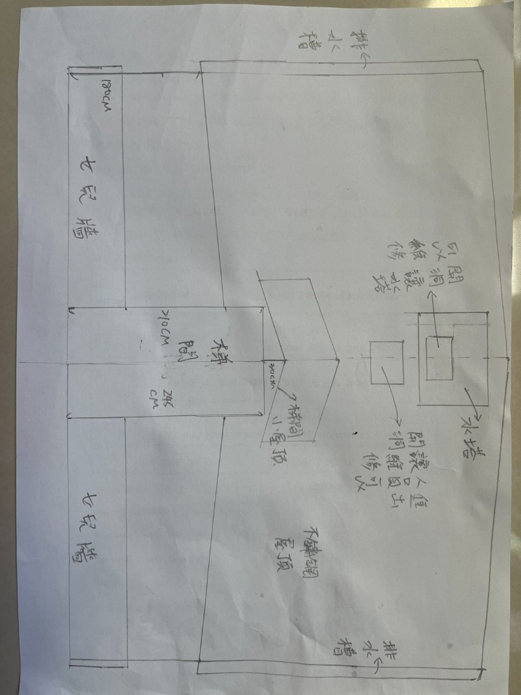

<!DOCTYPE html>
<html lang="zh-TW">
<head>
  <meta charset="UTF-8">
  <meta name="viewport" content="width=device-width, initial-scale=1.0">
  <title>第 9 單元：【旗艦實戰三】建築樓頂不銹鋼斜屋頂 · 業主手繪草圖轉譯 2D 施工圖 ＋ 3D 等角實體建模全圖解 | AutoCAD 2024 高中生自學手冊</title>
  <link rel="stylesheet" href="../assets/style.css">
  <link rel="preconnect" href="https://fonts.googleapis.com">
  <link rel="preconnect" href="https://fonts.gstatic.com" crossorigin>
  <link href="https://fonts.googleapis.com/css2?family=Cormorant+Garamond:ital,wght@0,600;0,700;1,600&family=JetBrains+Mono:wght@400;500;700&family=Noto+Sans+TC:wght@400;500;700&family=Noto+Serif+TC:wght@700;900&display=swap" rel="stylesheet">
</head>
<body>

  <nav class="navbar">
    <div class="container nav-container">
      <a href="../index.html" class="nav-logo">
        <div class="logo-badge">A</div>
        <div class="logo-text">
          <h1>AutoCAD 2024 自學手冊</h1>
          <span>HIGH SCHOOL CAD &amp; PCB GUIDE</span>
        </div>
      </a>
      <ul class="nav-menu">
        <li><a href="../index.html" class="nav-link">🏠 回首頁</a></li>
        <li><a href="01-interface.html" class="nav-link">01 介面環境</a></li>
        <li><a href="02-draw-tools.html" class="nav-link">02 繪製工具</a></li>
        <li><a href="03-modify-tools.html" class="nav-link">03 修改工具</a></li>
        <li><a href="04-layers-properties.html" class="nav-link">04 圖層性質</a></li>
        <li><a href="05-blocks-annotation.html" class="nav-link">05 圖塊註解</a></li>
        <li><a href="06-pcb-tutorial.html" class="nav-link" style="color:var(--cad-green);font-weight:bold;">⚡ 06 PCB實戰</a></li>
        <li><a href="07-shortcuts.html" class="nav-link">07 快捷鍵表</a></li>
        <li><a href="08-interior-design.html" class="nav-link" style="color:var(--terracotta);font-weight:bold;">🏡 08 室內設計</a></li>
        <li><a href="09-rooftop-roof.html" class="nav-link active" style="color:var(--amber);font-weight:bold;">🏗️ 09 樓頂鐵皮屋頂</a></li>
        <li><a href="10-twenty-examples.html" class="nav-link" style="color:var(--terracotta);font-weight:bold;">🎯 10 零基礎20範例</a></li>
      </ul>
    </div>
  </nav>

  <header class="hero" style="padding: 48px 0 36px;">
    <div class="container">
      <div class="hero-tag" style="border-color:var(--sand-border);color:var(--amber);">UNIT 09 · 2D &amp; 3D STRUCTURAL STEEL ROOF MASTER PROJECT</div>
      <h1 class="hero-title">【旗艦實戰三】建築樓頂不銹鋼斜屋頂 <br><span class="gradient-text">業主手繪草圖工程轉譯 · 2D 施工配置圖 ＋ 3D 等角實體建模全流程</span></h1>
      <p class="hero-desc">
        從高科技電路板、日系住宅室內設計，跨界躍升至土木建築鋼結構實體工程！以常見的頂樓防漏隔熱「雙向斜坡鐵皮鋼構屋頂（跨距 8 公尺、進深 12 公尺）」為例，深入解析三角坡度幾何（1:3 坡度）、H型鋼主樑、C型鋼檁條陣列、三合一隔熱浪板、屋脊天溝防水包板、波峰鎖螺絲防漏物理真相，並進階展開<strong>三維空間座標 UCS 變換、工字樑 3D 掃掠成型、屋脊 3D SLICE 剖切對接、浪板波形三維陣列、擬真材質賦予與日光渲染出圖</strong>！
      </p>
    </div>
  </header>

  <main class="container" style="padding: 40px 24px;">

    <!-- 一、 專案概況：業主現場手繪草圖 100% 工程轉譯（真實施工案） -->
    <section>
      <h2 style="font-size:1.8rem;color:var(--ink);margin-bottom:12px;border-left:5px solid var(--amber);padding-left:14px;font-family:'Noto Serif TC',serif;">
        一、 專案概況：業主現場手繪草圖 100% 深度工程轉譯
      </h2>
      <p style="color:var(--text-muted);font-size:1.02rem;margin-bottom:20px;line-height:1.8;">
        在真實工程實務中，客戶常在工地現場拿白紙手繪需求。本專案以<strong>業主真實手繪屋頂改建草圖</strong>為基準，一步步帶領高中生與自學創作者，將手繪草圖精準轉譯為符合建築法規與台灣鐵工工法的 AutoCAD 2D 施工平面圖、剖面圖與 3D 實體模型！
      </p>

      <!-- 手繪草圖與工程轉譯對照卡片 -->
      <div class="grid-cards" style="grid-template-columns:1fr 1.25fr;gap:24px;margin-bottom:32px;align-items:start;">
        <div style="background:var(--sand-alt);border:1px solid var(--sand-border);border-radius:10px;padding:16px;text-align:center;">
          <h4 style="color:var(--ink);margin-bottom:12px;font-size:1.05rem;">📝 業主現場手繪原始草圖 (Field Survey Sketch)</h4>
          
          <p style="font-size:0.82rem;color:var(--text-muted);margin-top:8px;">▲ 現場第一手手稿：精確註記陽台尺寸、梯間起拱、180cm女兒牆、水塔開洞與人員人孔</p>
        </div>

        <div style="background:var(--sand);border:1px solid var(--sand-border);border-radius:10px;padding:20px;">
          <h4 style="color:var(--terracotta);margin-bottom:14px;font-size:1.1rem;">📐 手繪草圖 6 大核心機能工程轉譯解讀：</h4>
          <ul style="font-size:0.92rem;line-height:1.8;padding-left:18px;color:var(--ink);">
            <li><strong>1. 露天陽台（245 cm × 710 cm）</strong>：頂樓開闊休憩露台，淨寬度 <code>2,450mm</code>、長度 <code>7,100mm</code>，特意不加蓋鐵皮以保留戶外陽光與植栽通風。</li>
            <li><strong>2. 180cm 高防護女兒牆</strong>：陽台外圍加高至 <code>1,800mm</code> 的 RC 結構女兒牆，兼具防強風、防墜落安全與遮蔽鄰房視線的高隱密性。</li>
            <li><strong>3. 梯間小屋頂（起拱 30cm）</strong>：室內樓梯間出入口上方凸出的獨立雙斜小山牆，起拱高度 <code>300mm</code>，防止雨水自梯間灌入室內，與主屋面交接處施作雙道泛水板。</li>
            <li><strong>4. 不銹鋼雙斜屋頂（中心屋脊線）</strong>：主遮蔽屋面採用耐腐蝕 0.5mm SUS304 不銹鋼浪板，沿中心脊線向上下兩側雙向傾斜排水（標準坡度 1:3）。</li>
            <li><strong>5. 上下雙側排水槽（Gutter）</strong>：斜坡上下兩端外沿各架設一道深 150mm 不銹鋼集水簷溝，匯集大雨水流排向 PVC 落水管。</li>
            <li><strong>6. 水塔雙開孔專利級維護系統</strong>：<br>
              • <strong>可開洞以維護水塔</strong>：位於 1.5 噸水塔正上方，帶防雨翻邊，方便水電師傅清洗水塔內部、更換進水浮球閥與出水配管。<br>
              • <strong>開讓人員出入洞維修可以</strong>：獨立的活動掀蓋人孔（Hatch），使技工不須攀爬危險外牆，可直接由內部安全登上不銹鋼屋頂巡檢天溝與清淤！
            </li>
          </ul>
        </div>
      </div>

      <!-- 2D 屋頂平面配置圖 SVG -->
      <div style="background:var(--sand-alt);border:1px solid var(--sand-border);border-radius:12px;padding:24px;margin-bottom:32px;text-align:center;box-shadow:0 6px 20px rgba(0,0,0,0.06);">
        <h3 style="color:var(--ink);font-size:1.15rem;margin-bottom:16px;">📐 依據手繪草圖繪製：2D 頂樓屋頂施工平面配置圖 (Roof Framing &amp; Layout Plan 比例 1:50)</h3>
        <svg viewBox="0 0 920 620" style="max-width:880px;width:100%;height:auto;filter:drop-shadow(0 4px 12px rgba(31,26,23,0.08));">
          <!-- 背景底色板 -->
          <rect x="10" y="10" width="900" height="600" rx="8" fill="#FDFBF7" stroke="#D1C4B2" stroke-width="1.5"/>

          <!-- 上側排水槽 (Top Eaves Gutter) -->
          <rect x="70" y="45" width="780" height="25" fill="#E0F2FE" stroke="#0284C7" stroke-width="2"/>
          <text x="460" y="62" fill="#0284C7" font-size="12" font-weight="bold" text-anchor="middle">上側不銹鋼排水槽 (Gutter 寬200mm) ➜ 排向落水頭</text>

          <!-- 下側排水槽 (Bottom Eaves Gutter) -->
          <rect x="70" y="530" width="780" height="25" fill="#E0F2FE" stroke="#0284C7" stroke-width="2"/>
          <text x="460" y="547" fill="#0284C7" font-size="12" font-weight="bold" text-anchor="middle">下側不銹鋼排水槽 (Gutter 寬200mm) ➜ 排向落水頭</text>

          <!-- 左上 180cm 女兒牆 -->
          <rect x="70" y="70" width="160" height="150" fill="#E8DFD3" stroke="#1F1A17" stroke-width="2"/>
          <text x="150" y="150" fill="#1F1A17" font-size="12" font-weight="bold" text-anchor="middle">180cm 高女兒牆</text>

          <!-- 左下 180cm 女兒牆 -->
          <rect x="70" y="380" width="160" height="150" fill="#E8DFD3" stroke="#1F1A17" stroke-width="2"/>
          <text x="150" y="460" fill="#1F1A17" font-size="12" font-weight="bold" text-anchor="middle">180cm 高女兒牆</text>

          <!-- 中間陽台 (Balcony 2450 x 7100 mm) -->
          <rect x="70" y="220" width="310" height="160" fill="#F4ECE1" stroke="#C2410C" stroke-width="2.5"/>
          <g stroke="#E8DFD3" stroke-width="1">
            <line x1="100" y1="220" x2="100" y2="380"/>
            <line x1="130" y1="220" x2="130" y2="380"/>
            <line x1="160" y1="220" x2="160" y2="380"/>
            <line x1="190" y1="220" x2="190" y2="380"/>
            <line x1="220" y1="220" x2="220" y2="380"/>
            <line x1="250" y1="220" x2="250" y2="380"/>
            <line x1="280" y1="220" x2="280" y2="380"/>
            <line x1="310" y1="220" x2="310" y2="380"/>
            <line x1="340" y1="220" x2="340" y2="380"/>
          </g>
          <text x="225" y="290" fill="#C2410C" font-size="15" font-weight="bold" text-anchor="middle">露天陽台 (Balcony)</text>
          <text x="225" y="315" fill="#786B62" font-size="11" text-anchor="middle">寬 2,450 mm × 長 7,100 mm (木紋防滑地磚)</text>

          <!-- 梯間小屋頂 (Stairwell Penthouse Roof) -->
          <polygon points="380,260 480,220 480,380 380,340" fill="#E2DDD5" stroke="#1F1A17" stroke-width="2"/>
          <line x1="430" y1="240" x2="430" y2="360" stroke="#B87818" stroke-width="2" stroke-dasharray="4"/>
          <text x="430" y="300" fill="#1F1A17" font-size="11" font-weight="bold" text-anchor="middle" transform="rotate(-90 430,300)">梯間小屋頂 (起拱 30cm)</text>

          <!-- 主不銹鋼雙斜屋頂 (SUS304 Stainless Steel Roof) -->
          <line x1="480" y1="300" x2="850" y2="300" stroke="#C2410C" stroke-width="3" stroke-dasharray="6 3"/>
          <text x="665" y="290" fill="#C2410C" font-size="12" font-weight="bold" text-anchor="middle">主屋脊線 (Ridge Line ±0.00)</text>

          <!-- 上半坡面 -->
          <rect x="480" y="70" width="370" height="230" fill="rgba(184, 120, 24, 0.08)" stroke="#1F1A17" stroke-width="1.5"/>
          <g stroke="#0284C7" stroke-width="2" fill="#0284C7">
            <line x1="560" y1="200" x2="560" y2="100"/>
            <polygon points="560,90 554,105 566,105"/>
            <text x="575" y="150" fill="#0284C7" font-size="11" font-weight="bold">坡度 1:3 排水 ➜</text>
          </g>

          <!-- 下半坡面 -->
          <rect x="480" y="300" width="370" height="230" fill="rgba(184, 120, 24, 0.08)" stroke="#1F1A17" stroke-width="1.5"/>
          <g stroke="#0284C7" stroke-width="2" fill="#0284C7">
            <line x1="560" y1="400" x2="560" y2="500"/>
            <polygon points="560,510 554,495 566,495"/>
            <text x="575" y="460" fill="#0284C7" font-size="11" font-weight="bold">坡度 1:3 排水 ➜</text>
          </g>

          <!-- 水塔與雙開孔專用區域 -->
          <rect x="680" y="330" width="130" height="130" fill="#FEFEF9" stroke="#1F1A17" stroke-width="2" stroke-dasharray="3"/>
          <circle cx="745" cy="395" r="50" fill="#E8DFD3" stroke="#1F1A17" stroke-width="2"/>
          <text x="745" y="400" fill="#1F1A17" font-size="12" font-weight="bold" text-anchor="middle">水塔 (1.5噸)</text>

          <!-- 開口 1: 可開洞以維護水塔 (Service Opening) -->
          <rect x="705" y="365" width="80" height="60" fill="rgba(2, 132, 199, 0.2)" stroke="#0284C7" stroke-width="2"/>
          <text x="745" y="390" fill="#0284C7" font-size="10" font-weight="bold" text-anchor="middle">水塔專用維修孔</text>
          <text x="745" y="402" fill="#0284C7" font-size="8" text-anchor="middle">(帶 200mm 止水坎)</text>

          <!-- 開口 2: 開讓人員出入洞維修可以 (Personnel Access Hatch) -->
          <rect x="610" y="350" width="55" height="55" fill="rgba(194, 65, 12, 0.2)" stroke="#C2410C" stroke-width="2"/>
          <line x1="610" y1="350" x2="665" y2="405" stroke="#C2410C" stroke-width="1.5"/>
          <text x="637" y="340" fill="#C2410C" font-size="10" font-weight="bold" text-anchor="middle">人員進出人孔</text>
          <text x="637" y="420" fill="#C2410C" font-size="9" text-anchor="middle">(600×600 掀蓋)</text>

          <!-- 外部標註引線 -->
          <line x1="770" y1="365" x2="820" y2="320" stroke="#0284C7" stroke-width="1.2"/>
          <text x="825" y="318" fill="#0284C7" font-size="10" font-weight="bold">① 可開洞以維護水塔 (清洗/換浮球專用)</text>

          <line x1="637" y1="350" x2="637" y2="250" stroke="#C2410C" stroke-width="1.2"/>
          <text x="637" y="240" fill="#C2410C" font-size="10" font-weight="bold" text-anchor="middle">② 人員出入人孔 (讓技工安全登頂巡檢)</text>

          <line x1="225" y1="220" x2="225" y2="100" stroke="#786B62" stroke-width="1.2"/>
          <text x="225" y="90" fill="#786B62" font-size="10" font-weight="bold" text-anchor="middle">③ 頂樓陽台 245×710cm ＋ 180cm 女兒牆</text>

          <!-- 尺寸標註 -->
          <line x1="70" y1="580" x2="380" y2="580" stroke="#1F1A17" stroke-width="1"/>
          <line x1="70" y1="575" x2="70" y2="585" stroke="#1F1A17" stroke-width="1.5"/>
          <line x1="380" y1="575" x2="380" y2="585" stroke="#1F1A17" stroke-width="1.5"/>
          <text x="225" y="595" fill="#1F1A17" font-size="11" font-family="'JetBrains Mono',monospace" text-anchor="middle">陽台寬度: 2,450 mm</text>

          <line x1="380" y1="580" x2="850" y2="580" stroke="#1F1A17" stroke-width="1"/>
          <line x1="850" y1="575" x2="850" y2="585" stroke="#1F1A17" stroke-width="1.5"/>
          <text x="615" y="595" fill="#1F1A17" font-size="11" font-family="'JetBrains Mono',monospace" text-anchor="middle">不銹鋼屋頂長度: 8,000 mm</text>
        </svg>
      </div>

      <!-- 鋼構屋頂剖面結構圖 SVG 展示 (日系暖色風格) -->
      <div style="background:var(--sand-alt);border:1px solid var(--sand-border);border-radius:12px;padding:24px;margin-bottom:32px;text-align:center;box-shadow:0 4px 16px rgba(0,0,0,0.04);">
        <h3 style="color:var(--ink);font-size:1.15rem;margin-bottom:16px;">🏗️ 樓頂鋼構鐵皮雙斜屋頂 · 完整剖面結構圖 (2D Truss Cross-Section)</h3>

        <svg viewBox="0 0 880 500" style="max-width:830px;width:100%;height:auto;filter:drop-shadow(0 4px 12px rgba(31,26,23,0.08));">
          <!-- 背景底色 -->
          <rect x="10" y="10" width="860" height="480" rx="8" fill="#FDFBF7" stroke="#D1C4B2" stroke-width="1.5"/>

          <!-- 建築女兒牆 (Parapet) 與 RC 樓板基準面 (±0.00 FL) -->
          <!-- 左側女兒牆 -->
          <rect x="70" y="320" width="40" height="120" fill="#E8DFD3" stroke="#1F1A17" stroke-width="2"/>
          <text x="90" y="380" fill="#786B62" font-size="10" text-anchor="middle" transform="rotate(-90 90,380)">RC 女兒牆 (厚200)</text>
          <!-- 右側女兒牆 -->
          <rect x="770" y="320" width="40" height="120" fill="#E8DFD3" stroke="#1F1A17" stroke-width="2"/>
          <text x="790" y="380" fill="#786B62" font-size="10" text-anchor="middle" transform="rotate(90 790,380)">RC 女兒牆 (厚200)</text>
          <!-- 頂樓 RC 平頂地坪 -->
          <rect x="110" y="420" width="660" height="20" fill="#E8DFD3" stroke="#1F1A17" stroke-width="2"/>
          <text x="440" y="435" fill="#786B62" font-size="11" text-anchor="middle">原建築頂樓 RC 樓板 (FL ±0.00)</text>

          <!-- 化學膨脹錨栓與鋼板底座 (Baseplate) -->
          <rect x="80" y="305" width="20" height="15" fill="#B87818" stroke="#1F1A17"/>
          <line x1="90" y1="320" x2="90" y2="350" stroke="#C2410C" stroke-width="2.5"/>
          <text x="55" y="315" fill="#C2410C" font-size="9">M16 錨栓</text>

          <rect x="780" y="305" width="20" height="15" fill="#B87818" stroke="#1F1A17"/>
          <line x1="790" y1="320" x2="790" y2="350" stroke="#C2410C" stroke-width="2.5"/>

          <!-- 鋼結構主立柱 (Square Tube 100x100x3.2mm) -->
          <rect x="85" y="195" width="10" height="110" fill="#2E2A28" stroke="#1F1A17"/>
          <rect x="785" y="195" width="10" height="110" fill="#2E2A28" stroke="#1F1A17"/>

          <!-- 三角斜屋架主要斜大樑 (Rafter H-150x75x5x7) -->
          <line x1="90" y1="200" x2="440" y2="85" stroke="#1F1A17" stroke-width="8" stroke-linecap="round"/>
          <line x1="90" y1="200" x2="440" y2="85" stroke="#B87818" stroke-width="4" stroke-linecap="round"/>
          
          <line x1="790" y1="200" x2="440" y2="85" stroke="#1F1A17" stroke-width="8" stroke-linecap="round"/>
          <line x1="790" y1="200" x2="440" y2="85" stroke="#B87818" stroke-width="4" stroke-linecap="round"/>

          <!-- 橫向下弦拉桿 (Tie Beam) 抵抗側推力 -->
          <line x1="90" y1="200" x2="790" y2="200" stroke="#4A7C59" stroke-width="3"/>
          <text x="440" y="218" fill="#4A7C59" font-size="11" font-weight="bold" text-anchor="middle">下弦拉桿 (Tie Beam) 抵消側向推力 (Thrust)</text>

          <!-- 屋脊垂直中柱 (King Post) 與 斜剪刀撐 (Struts) -->
          <line x1="440" y1="85" x2="440" y2="200" stroke="#4A7C59" stroke-width="2.5"/>
          <line x1="265" y1="200" x2="265" y2="142" stroke="#4A7C59" stroke-width="2"/>
          <line x1="615" y1="200" x2="615" y2="142" stroke="#4A7C59" stroke-width="2"/>
          <line x1="265" y1="200" x2="440" y2="85" stroke="#4A7C59" stroke-width="1.5" stroke-dasharray="3"/>
          <line x1="615" y1="200" x2="440" y2="85" stroke="#4A7C59" stroke-width="1.5" stroke-dasharray="3"/>

          <!-- C型鋼檁條 (Purlins C-100x50x20 間距約 750mm) -->
          <g fill="#B87818" stroke="#1F1A17" stroke-width="1">
            <rect x="110" y="180" width="10" height="14" transform="rotate(-18 115,187)"/>
            <rect x="175" y="158" width="10" height="14" transform="rotate(-18 180,165)"/>
            <rect x="240" y="136" width="10" height="14" transform="rotate(-18 245,143)"/>
            <rect x="305" y="115" width="10" height="14" transform="rotate(-18 310,122)"/>
            <rect x="370" y="93" width="10" height="14" transform="rotate(-18 375,100)"/>
            
            <rect x="500" y="93" width="10" height="14" transform="rotate(18 505,100)"/>
            <rect x="565" y="115" width="10" height="14" transform="rotate(18 570,122)"/>
            <rect x="630" y="136" width="10" height="14" transform="rotate(18 635,143)"/>
            <rect x="695" y="158" width="10" height="14" transform="rotate(18 700,165)"/>
            <rect x="760" y="180" width="10" height="14" transform="rotate(18 765,187)"/>
          </g>

          <!-- 三合一 PU 發泡隔熱金屬浪板 (頂層鋪設) -->
          <line x1="60" y1="200" x2="440" y2="75" stroke="#C2410C" stroke-width="6"/>
          <line x1="820" y1="200" x2="440" y2="75" stroke="#C2410C" stroke-width="6"/>
          <text x="210" y="110" fill="#C2410C" font-size="11" font-weight="bold" transform="rotate(-18 210,110)">三合一雙層隔熱浪板 (厚度25mm)</text>

          <!-- 屋脊防水收邊蓋板 (Ridge Cap Flashing) -->
          <path d="M 405,82 L 440,68 L 475,82" fill="none" stroke="#1F1A17" stroke-width="3"/>
          <circle cx="440" cy="68" r="3" fill="#C2410C"/>
          <text x="440" y="52" fill="#C2410C" font-size="11" font-weight="bold" text-anchor="middle">屋脊防水蓋板 (Ridge Flashing)</text>

          <!-- 左右兩端簷溝 (Gutter) 與天溝落水管 -->
          <path d="M 50,195 L 50,230 L 70,230" fill="none" stroke="#0284C7" stroke-width="2.5"/>
          <line x1="60" y1="230" x2="60" y2="350" stroke="#0284C7" stroke-width="2" stroke-dasharray="2"/>
          <text x="35" y="240" fill="#0284C7" font-size="10" text-anchor="end">PVC 天溝落水</text>

          <path d="M 830,195 L 830,230 L 810,230" fill="none" stroke="#0284C7" stroke-width="2.5"/>
          <line x1="820" y1="230" x2="820" y2="350" stroke="#0284C7" stroke-width="2" stroke-dasharray="2"/>
          <text x="845" y="240" fill="#0284C7" font-size="10" text-anchor="start">PVC 天溝落水</text>

          <!-- 坡度三角形符號 (Pitch 1:3) -->
          <g transform="translate(280, 70)">
            <polygon points="0,0 60,0 60,20" fill="#F4ECE1" stroke="#1F1A17" stroke-width="1.2"/>
            <text x="30" y="-4" fill="#1F1A17" font-size="9" text-anchor="middle">3</text>
            <text x="68" y="14" fill="#1F1A17" font-size="9">1</text>
            <text x="30" y="32" fill="#B87818" font-size="10" font-weight="bold" text-anchor="middle">坡度 1:3 (θ≈18.4°)</text>
          </g>

          <!-- 尺寸標註 -->
          <line x1="90" y1="465" x2="790" y2="465" stroke="#1F1A17" stroke-width="1"/>
          <line x1="90" y1="458" x2="90" y2="472" stroke="#1F1A17" stroke-width="2"/>
          <line x1="790" y1="458" x2="790" y2="472" stroke="#1F1A17" stroke-width="2"/>
          <text x="440" y="482" fill="#1F1A17" font-size="12" font-weight="bold" font-family="'JetBrains Mono',monospace" text-anchor="middle">鋼柱跨距: 7,000 mm（女兒牆外開間: 8,000 mm）</text>

          <line x1="845" y1="85" x2="845" y2="200" stroke="#C2410C" stroke-width="1"/>
          <line x1="838" y1="85" x2="852" y2="85" stroke="#C2410C" stroke-width="2"/>
          <line x1="838" y1="200" x2="852" y2="200" stroke="#C2410C" stroke-width="2"/>
          <text x="855" y="148" fill="#C2410C" font-size="11" font-weight="bold" font-family="'JetBrains Mono',monospace">H=1,167mm</text>
        </svg>
      </div>

      <!-- 高中數學三角函數坡度計算 -->
      <div class="memo-card amber" style="margin-bottom:32px;">
        <div class="memo-title">
          <span>🔬 高中三角函數數學推導：斜屋頂坡度比（Slope Ratio）與屋脊高度精確幾何</span>
        </div>
        <p style="font-size:0.92rem;line-height:1.8;">
          • <strong>什麼是坡度比 1:3？</strong> 建築工程中坡度比定義為「垂直上升量 $\Delta Y$ : 水平前進量 $\Delta X$」。1:3 代表水平每前進 3 個單位，高度就爬升 1 個單位！<br>
          • <strong>傾斜角 $	heta$ 計算</strong>：
          $$	an	heta = rac{1}{3} pprox 0.3333 \implies 	heta = rctan(0.3333) pprox 18.4349^\circ pprox 18.43^\circ$$
          • <strong>屋脊起拱高度 $H$</strong>：左右鋼柱跨距 $L = 7,000	ext{mm}$，半跨距為 $L/2 = 3,500	ext{mm}$，則屋脊頂點起拱高度為：
          $$H = 3,500 	imes rac{1}{3} pprox 1,166.67	ext{ mm} pprox 1,167	ext{ mm}$$
          • <strong>斜大樑實長（勾股定理 / 畢氏定理推導）</strong>：
          $$	ext{斜樑中心長度} = \sqrt{3,500^2 + 1,166.7^2} = 3,500 	imes \sqrt{1 + \left(rac{1}{3}
ight)^2} = 3,500 	imes rac{\sqrt{10}}{3} pprox 3,689.32	ext{ mm}$$
          在 AutoCAD 繪製時，只要透過相對極座標語法輸入 <span class="cmd-prompt">@3689.32&lt;18.43</span>，就能 100% 精準捕捉斜樑屋脊頂點！
        </p>
      </div>
    </section>

    <!-- 二、 為什麼鐵皮屋頂螺絲絕不能鎖在「波谷」？物理防漏解密 -->
    <section style="margin-top:40px;">
      <h2 style="font-size:1.8rem;color:var(--ink);margin-bottom:12px;border-left:5px solid var(--terracotta);padding-left:14px;font-family:'Noto Serif TC',serif;">
        二、 施工物理防漏大解密：為什麼自攻螺絲嚴禁鎖在「波谷」？
      </h2>
      <p style="color:var(--text-muted);font-size:1.02rem;margin-bottom:20px;line-height:1.8;">
        很多新手甚至是經驗不足的土水師傅常犯致命錯誤：以為把螺絲鎖在浪板凹下去的「波谷」最貼近 C 型鋼、最省力。結果颱風天雨勢稍大，屋內漏水如瀑布！這背後有嚴謹的流體力學與重力規律。
      </p>

      <!-- SVG 浪板波峰 vs 波谷 物理流體示意圖 -->
      <div style="background:var(--sand-alt);border:1px solid var(--sand-border);border-radius:10px;padding:20px;margin:20px 0;text-align:center;">
        <svg viewBox="0 0 760 210" style="max-width:720px;width:100%;height:auto;">
          <g transform="translate(30, 20)">
            <text x="350" y="10" fill="#1F1A17" font-size="13" font-weight="bold" text-anchor="middle">金屬浪板波峰 (Crest) 與 波谷 (Valley) 物理受雨剖面</text>
            
            <path d="M 20,90 L 70,40 L 120,40 L 170,90 L 220,90 L 270,40 L 320,40 L 370,90 L 420,90 L 470,40 L 520,40 L 570,90 L 620,90 L 670,40" fill="none" stroke="#1F1A17" stroke-width="4"/>

            <!-- 雨水匯流層 (波谷積水) -->
            <path d="M 170,90 L 220,90 L 220,70 L 170,70 Z" fill="rgba(2, 132, 199, 0.4)"/>
            <path d="M 370,90 L 420,90 L 420,70 L 370,70 Z" fill="rgba(2, 132, 199, 0.4)"/>
            <path d="M 570,90 L 620,90 L 620,70 L 570,70 Z" fill="rgba(2, 132, 199, 0.4)"/>
            <text x="395" y="83" fill="#0284C7" font-size="10" font-weight="bold" text-anchor="middle">雨水急流匯聚區 (水深 10~20mm)</text>

            <!-- 正確做法：鎖在波峰 -->
            <g transform="translate(95, 20)">
              <line x1="0" y1="0" x2="0" y2="40" stroke="#4A7C59" stroke-width="3"/>
              <circle cx="0" cy="0" r="6" fill="#4A7C59"/>
              <rect x="-8" y="16" width="16" height="5" rx="1" fill="#B87818"/>
              <text x="0" y="-10" fill="#4A7C59" font-size="11" font-weight="bold" text-anchor="middle">✓ 正確：鎖在波峰頂端</text>
              <text x="0" y="65" fill="#4A7C59" font-size="9" text-anchor="middle">水往低處流，波峰無積水</text>
              <text x="0" y="78" fill="#4A7C59" font-size="9" text-anchor="middle">搭配 EPDM 防水華司墊片</text>
            </g>

            <!-- 錯誤做法：鎖在波谷 -->
            <g transform="translate(195, 70)">
              <line x1="0" y1="0" x2="0" y2="40" stroke="#DC2626" stroke-width="3"/>
              <circle cx="0" cy="0" r="6" fill="#DC2626"/>
              <text x="0" y="-12" fill="#DC2626" font-size="11" font-weight="bold" text-anchor="middle">✗ 錯誤：鎖在波谷！</text>
              <text x="0" y="55" fill="#DC2626" font-size="9" font-weight="bold" text-anchor="middle">螺絲孔直接浸泡在雨水中！</text>
              <text x="0" y="68" fill="#DC2626" font-size="9" text-anchor="middle">墊片老化後保證漏水進屋內！</text>
            </g>
          </g>
        </svg>
      </div>

      <div class="grid-cards" style="grid-template-columns:1fr 1fr;gap:16px;">
        <div class="card">
          <h4 style="color:var(--cad-green);">物理流體重力原理</h4>
          <p style="font-size:0.9rem;line-height:1.7;">
            雨水落在斜屋頂時，在重力作用下會迅速由高處匯聚到低凹的「波谷」，波谷如同小排水溝，流速快、水層厚（暴雨時水深可達 15mm）。將自攻螺絲鎖在凸起的<strong>「波峰」</strong>，水流瞬間沿兩側滑落，螺絲孔周圍永遠不會積水，達到 20 年不漏水！
          </p>
        </div>
        <div class="card">
          <h4 style="color:var(--terracotta);">三合一發泡浪板的隔熱阻燃構造</h4>
          <p style="font-size:0.9rem;line-height:1.7;">
            傳統單層鐵皮下雨時吵如打鼓、夏天室內高達 45°C！現代圖面標準規格為<strong>「雙層三合一發泡浪板」</strong>：<br>
            • 上層：0.5mm 耐候烤漆鋼板<br>
            • 中夾層：25mm 阻燃 PU 聚氨酯發泡（隔音吸熱，熱傳導係數 $K \le 0.024	ext{ W/m}\cdot	ext{K}$）<br>
            • 底層：防潮 PVC 飾紋紙或鋁箔（美觀阻絕水氣）
          </p>
        </div>
      </div>
    </section>

    <!-- 三、 建立鋼結構專用 7 大圖層 -->
    <section style="margin-top:40px;">
      <h2 style="font-size:1.8rem;color:var(--ink);margin-bottom:12px;border-left:5px solid var(--cad-green);padding-left:14px;font-family:'Noto Serif TC',serif;">
        三、 建立鋼結構屋頂 7 大標準圖層（LAYER / LA）
      </h2>
      <p style="color:var(--text-muted);font-size:1.02rem;margin-bottom:20px;line-height:1.8;">
        鋼結構工程圖講究主結構、次結構、緊固件與土建介面的層級區隔。輸入 <span class="key-badge">LA</span> 建立以下 7 大標準圖層：
      </p>

      <table style="width:100%;border-collapse:collapse;margin:16px 0;background:var(--sand);border-radius:6px;overflow:hidden;font-size:0.88rem;border:1px solid var(--sand-border);">
        <thead>
          <tr style="background:var(--sand-alt);color:var(--ink);text-align:left;border-bottom:2px solid var(--sand-border);">
            <th style="padding:10px 14px;">圖層名稱</th>
            <th style="padding:10px 14px;">顏色 (Color)</th>
            <th style="padding:10px 14px;">線型</th>
            <th style="padding:10px 14px;">線寬</th>
            <th style="padding:10px 14px;">鋼結構材料與施工說明</th>
          </tr>
        </thead>
        <tbody>
          <tr style="border-bottom:1px solid var(--sand-border);">
            <td style="padding:10px 14px;font-family:monospace;color:var(--terracotta);font-weight:bold;">00_Axis_軸線</td>
            <td style="padding:10px 14px;"><span style="color:var(--terracotta);">■ 紅色 (1)</span></td>
            <td style="padding:10px 14px;font-family:monospace;">CENTER</td>
            <td style="padding:10px 14px;">0.13 mm</td>
            <td style="padding:10px 14px;">女兒牆結構中心與斜大樑幾何軸線基準</td>
          </tr>
          <tr style="border-bottom:1px solid var(--sand-border);">
            <td style="padding:10px 14px;font-family:monospace;color:#1F1A17;font-weight:bold;">01_Main_Steel_主結構</td>
            <td style="padding:10px 14px;"><span style="color:#1F1A17;">■ 墨黑 (7)</span></td>
            <td style="padding:10px 14px;">Continuous</td>
            <td style="padding:10px 14px;font-family:monospace;">0.50 mm (最粗)</td>
            <td style="padding:10px 14px;">H-150×75×5×7 斜大樑、100×100×3.2 方管鋼柱、下弦水平拉桿</td>
          </tr>
          <tr style="border-bottom:1px solid var(--sand-border);">
            <td style="padding:10px 14px;font-family:monospace;color:var(--amber);font-weight:bold;">02_Purlin_檁條</td>
            <td style="padding:10px 14px;"><span style="color:var(--amber);">■ 琥珀 (30)</span></td>
            <td style="padding:10px 14px;">Continuous</td>
            <td style="padding:10px 14px;font-family:monospace;">0.35 mm</td>
            <td style="padding:10px 14px;">C型鋼檁條 (C-100×50×20×2.3mm 間距 750mm 鍍鋅鋼)</td>
          </tr>
          <tr style="border-bottom:1px solid var(--sand-border);">
            <td style="padding:10px 14px;font-family:monospace;color:var(--terracotta);font-weight:bold;">03_Roof_Panel_金屬浪板</td>
            <td style="padding:10px 14px;"><span style="color:var(--terracotta);">■ 陶土紅 (20)</span></td>
            <td style="padding:10px 14px;">Continuous</td>
            <td style="padding:10px 14px;font-family:monospace;">0.40 mm</td>
            <td style="padding:10px 14px;">雙層三合一 PU 烤漆隔熱浪板、屋脊蓋板、山牆防水收邊</td>
          </tr>
          <tr style="border-bottom:1px solid var(--sand-border);">
            <td style="padding:10px 14px;font-family:monospace;color:var(--cad-blue);font-weight:bold;">04_Gutter_天溝排水</td>
            <td style="padding:10px 14px;"><span style="color:var(--cad-blue);">■ 晴藍 (4)</span></td>
            <td style="padding:10px 14px;">Continuous</td>
            <td style="padding:10px 14px;font-family:monospace;">0.25 mm</td>
            <td style="padding:10px 14px;">0.6mm 不鏽鋼集水簷溝、Ø90mm PVC 落水導引立管</td>
          </tr>
          <tr style="border-bottom:1px solid var(--sand-border);">
            <td style="padding:10px 14px;font-family:monospace;color:#786B62;font-weight:bold;">05_Concrete_女兒牆</td>
            <td style="padding:10px 14px;"><span style="color:#786B62;">■ 灰色 (8)</span></td>
            <td style="padding:10px 14px;">Continuous</td>
            <td style="padding:10px 14px;font-family:monospace;">0.30 mm</td>
            <td style="padding:10px 14px;">原建築 RC 頂樓樓板、200mm 女兒牆基礎、M16 化學錨栓預埋位</td>
          </tr>
          <tr>
            <td style="padding:10px 14px;font-family:monospace;color:var(--terracotta);font-weight:bold;">06_Dimension_標註</td>
            <td style="padding:10px 14px;"><span style="color:var(--terracotta);">■ 陶土紅 (20)</span></td>
            <td style="padding:10px 14px;">Continuous</td>
            <td style="padding:10px 14px;font-family:monospace;">0.18 mm</td>
            <td style="padding:10px 14px;">開間跨距、檁條間距、起拱高度、坡度比三角形、多重引線施工註解</td>
          </tr>
        </tbody>
      </table>
    </section>

    <!-- 四、 2D AutoCAD 實機繪圖詳解（完全拒絕帶過！全指令提示與參數） -->
    <section style="margin-top:40px;">
      <h2 style="font-size:1.8rem;color:var(--ink);margin-bottom:12px;border-left:5px solid var(--cad-blue);padding-left:14px;font-family:'Noto Serif TC',serif;">
        四、 2D AutoCAD 實機繪圖詳解（全指令提示與參數輸入對話）
      </h2>
      <p style="color:var(--text-muted);font-size:1.02rem;margin-bottom:20px;line-height:1.8;">
        絕不含糊帶過！以下每一步驟均還原 AutoCAD 2024 命令行 (Command Line) 的真實提示與鍵盤輸入流程：
      </p>

      <!-- 步驟 1：主鋼樑幾何骨架繪製 -->
      <div class="step-box" style="border-left:4px solid var(--terracotta);margin-top:16px;">
        <div class="step-header">
          <span class="step-badge" style="background:var(--terracotta);color:#fff;">步驟 1</span>
          <span class="step-title">主鋼樑幾何骨架繪製（LINE / 相對極座標 / 下弦抗推力拉桿）</span>
        </div>
        <div class="step-content">
          <p><strong>1. 切換圖層與起點定位：</strong></p>
          <div class="cmd-box">
            <span class="cmd-prompt">指令: -LAYER</span> ➜ 輸入 <span class="cmd-input">S</span> (設定當前) ➜ 輸入 <span class="cmd-input">01_Main_Steel_主結構</span> ➜ 按 Enter。<br>
            <span class="cmd-prompt">指令: LINE (或 L)</span> ➜ 按 Enter。<br>
            <span class="cmd-prompt">指定第一點: 0,2000</span> （設定左側方管柱頂端點，高度 FL +2,000mm）➜ 按 Enter。<br>
            <span class="cmd-prompt">指定下一點: @3689.32&lt;18.43</span> （以長度 3689.32mm、角度 18.43° 直達屋脊頂點）➜ 按 Enter。<br>
            此時游標正位於屋脊頂點座標 <code>(3500, 3166.7)</code>！按 Enter 結束。
          </div>

          <p style="margin-top:14px;"><strong>2. 鏡射右側斜大樑（MIRROR）：</strong></p>
          <div class="cmd-box">
            <span class="cmd-prompt">指令: MIRROR (或 MI)</span> ➜ 選取剛畫好的左斜樑 ➜ 按 Enter。<br>
            <span class="cmd-prompt">指定鏡射線的第一點:</span> 鎖定屋脊頂點 (3500, 3167)。<br>
            <span class="cmd-prompt">指定鏡射線的第二點:</span> 按 <span class="key-badge">F8</span> 開啟正交模式，游標垂直往下點擊任意點。<br>
            <span class="cmd-prompt">刪除來源物件？[是(Y)/否(N)] &lt;N&gt;:</span> 按 Enter 默認保留否 ➜ 右側斜樑精準生成！
          </div>

          <p style="margin-top:14px;"><strong>3. 封閉下弦拉桿（力學關鍵）：</strong></p>
          <p style="font-size:0.9rem;line-height:1.7;">
            輸入 <span class="key-badge">L</span>，捕捉左立柱頂點 <code>(0, 2000)</code> 與右立柱頂點 <code>(7000, 2000)</code> 畫一條橫向水平線。
            <br>
            <span style="color:var(--terracotta);font-weight:bold;">💡 結構力學深度解析：</span> 斜屋架承受重力與風壓時，斜樑會對左右立柱產生巨大的<strong>「向外水平側推力 (Horizontal Thrust)」</strong>。如果沒有這根下弦拉桿，左右女兒牆會在幾年內被向外頂裂倒塌！下弦拉桿能將三角形封閉，使內部承受純拉力（Tension），將外推力完全自體抵消！
          </p>
        </div>
      </div>

      <!-- 步驟 2：C型鋼檁條繪製與陣列 -->
      <div class="step-box" style="border-left:4px solid var(--amber);margin-top:20px;">
        <div class="step-header">
          <span class="step-badge" style="background:var(--amber);color:#fff;">步驟 2</span>
          <span class="step-title">C型鋼檁條繪製、內圓角半徑與路徑定距陣列（PLINE / FILLET / ARRAYPATH）</span>
        </div>
        <div class="step-content">
          <p><strong>1. 繪製標準 C-100×50×20×2.3mm 開口薄壁斷面：</strong></p>
          <div class="cmd-box">
            <span class="cmd-prompt">指令: PLINE (或 PL)</span> ➜ 點選空白處為原點 (0,0)：<br>
            ➜ 水平往左: <span class="cmd-input">@20,0</span>（上唇緣 20mm）<br>
            ➜ 垂直往下: <span class="cmd-input">@0,-50</span>（上翼緣 50mm）<br>
            ➜ 水平往右: <span class="cmd-input">@100,0</span>（主腹板 100mm）<br>
            ➜ 垂直往上: <span class="cmd-input">@0,50</span>（下翼緣 50mm）<br>
            ➜ 水平往左: <span class="cmd-input">@-20,0</span>（下唇緣 20mm）➜ 按 Enter 結束。<br>
            <span class="cmd-prompt">指令: FILLET (或 F)</span> ➜ 輸入 <span class="cmd-input">R</span> ➜ 設定半徑 <span class="cmd-input">3.5</span>（鋼廠冷彎製造內角半徑）➜ 輸入 <span class="cmd-input">P</span> (聚合線) ➜ 點選該線，四個直角瞬間圓角化！<br>
            <span class="cmd-prompt">指令: OFFSET (或 O)</span> ➜ 輸入厚度 <span class="cmd-input">2.3</span> ➜ 向內偏移，兩端用 LINE 連接閉合，輸入 <span class="cmd-input">JOIN</span> 合併為單一閉合截面！
          </div>

          <p style="margin-top:14px;"><strong>2. 沿著斜樑斜度以 750mm 等距陣列（ARRAYPATH）：</strong></p>
          <div class="cmd-box">
            <span class="cmd-prompt">指令: BLOCK (或 B)</span> ➜ 命名為 <span class="cmd-input">PURLIN_C100</span>，指定基準點為 C 型鋼底部中心。<br>
            <span class="cmd-prompt">指令: ROTATE (或 RO)</span> ➜ 將圖塊旋轉 <span class="cmd-input">18.43°</span>，使其底座完全垂直貼合斜大樑。<br>
            <span class="cmd-prompt">指令: ARRAYPATH</span> ➜ 選取旋轉後的 C 型鋼圖塊 ➜ 選取斜樑直線為路徑。<br>
            <span class="cmd-prompt">在功能區設定：</span> 項目間距 (Between) 輸入 <span class="cmd-input">750</span> mm ➜ 自動生成 5 根均勻排列的檁條！
          </div>
        </div>
      </div>

      <!-- 步驟 3：浪板、收邊天溝與多重引線註解 -->
      <div class="step-box" style="border-left:4px solid var(--cad-green);margin-top:20px;">
        <div class="step-header">
          <span class="step-badge" style="background:var(--cad-green);color:#fff;">步驟 3</span>
          <span class="step-title">浪板雙線鋪設、屋脊倒V蓋板、天溝落水與施工引線（OFFSET / MLEADER）</span>
        </div>
        <div class="step-content">
          <p><strong>1. 浪板雙線與屋脊包板：</strong></p>
          <ol style="padding-left:20px;line-height:1.8;">
            <li>切換到 <code>03_Roof_Panel_金屬浪板</code> 圖層。</li>
            <li>使用 <span class="key-badge">OFFSET</span> 將斜樑中心線向上偏移 <code>100mm</code>（避開檁條高度），作為浪板底線。</li>
            <li>再向上 <span class="key-badge">OFFSET</span> <code>25mm</code>，代表三合一 PU 發泡層厚度，兩端各延伸 200mm 伸入天溝上方作為滴水線 (Drip Edge)。</li>
            <li>在屋脊頂部，以聚合線 <span class="key-badge">PL</span> 畫出寬度 400mm 的倒 V 形屋脊防水收邊蓋板，厚度 0.6mm，向下包覆左右浪板至少 150mm。</li>
          </ol>

          <p style="margin-top:14px;"><strong>2. 專業多重引線工程註解（MLEADER）：</strong></p>
          <div class="cmd-box">
            輸入 <span class="key-badge">MLD</span> ➜ 在重要結構節點拉出引線，標註國家標準規範文字：<br>
            • <code>主大樑: H-150x75x5x7mm 熱軋結構鋼 (CNS SS400) · 兩端加焊 12mm 封頭端板</code><br>
            • <code>檁條系統: C-100x50x20x2.3mm 冷彎鍍鋅型鋼 @750mm · 雙孔 M12 高強螺栓固定</code><br>
            • <code>屋面板: 雙面 0.5mm 盛餘烤漆鋼板夾 25mm 阻燃 PU 發泡三合一板 (坡度 1:3)</code><br>
            • <code>固件規範: #14-14x65mm 六角華司自攻自鑽螺絲帶耐候 EPDM 橡膠墊片 (嚴禁鎖於波谷，全面鎖於波峰頂部)</code>
          </div>
        </div>
      </div>
    </section>

    <!-- ==================== 核心進階：三維 3D 實體建模全流程 ==================== -->

    <!-- 五、 AutoCAD 2024 三維建模環境：工作區、ViewCube 與視覺型式 -->
    <section style="margin-top:56px;">
      <h2 style="font-size:1.8rem;color:var(--ink);margin-bottom:12px;border-left:5px solid var(--amber);padding-left:14px;font-family:'Noto Serif TC',serif;">
        五、 3D 實體建模起步走：工作空間、ViewCube 與視覺型式
      </h2>
      <p style="color:var(--text-muted);font-size:1.02rem;margin-bottom:20px;line-height:1.8;">
        從 2D 平面工程圖跨入 3D 實體鋼構，首先要學會操控立體駕駛艙！很多初學者誤以為 3D 需要重新學一套軟體，其實 AutoCAD 2024 內建極為強大的實體建模核心 (ACIS Engine)。
      </p>

      <div class="grid-cards" style="grid-template-columns:1fr 1fr 1fr;gap:16px;">
        <div class="card">
          <h4 style="color:var(--amber);">1. 切換 3D 塑體工作區</h4>
          <p style="font-size:0.88rem;line-height:1.7;">
            點擊 AutoCAD 右下角齒輪圖示或輸入指令：<br>
            <span class="cmd-prompt">指令: WSCURRENT</span> ➜ 輸入 <span class="cmd-input">3D Modeling</span> (3D 塑體)。功能區 Ribbon 將自動切換為實體、曲面、網面與三維修改專用面板！
          </p>
        </div>
        <div class="card">
          <h4 style="color:var(--cad-green);">2. ViewCube 導航視角切換</h4>
          <p style="font-size:0.88rem;line-height:1.7;">
            繪圖區右上角的導航立方體 ViewCube：<br>
            點擊立方體的<strong>「西南頂角 (SW)」</strong>，畫面立刻由 2D 俯視旋轉為 <strong>西南等角透視 (SW Isometric)</strong>！三維空間的 X(紅)、Y(綠)、Z(藍) 軸清晰呈現。
          </p>
        </div>
        <div class="card">
          <h4 style="color:var(--terracotta);">3. 視覺型式 (VISUALSTYLES)</h4>
          <p style="font-size:0.88rem;line-height:1.7;">
            輸入 <span class="key-badge">VS</span> 切換顯示模式：<br>
            • <code>2D Wireframe</code>: 純線條架構（適合精確抓鎖點）<br>
            • <code>Conceptual (概念)</code>: 暖色實體漸層<br>
            • <code>Shaded with Edges (帶邊著色)</code>: <strong>最推薦建模模式！</strong>既有實體體積感，又有清晰的黑色幾何輪廓線。
          </p>
        </div>
      </div>

      <div class="memo-card terracotta" style="margin-top:16px;">
        <div class="memo-title">
          <span>🎮 AutoCAD 三維環轉神速技：Shift ＋ 滑鼠滾輪</span>
        </div>
        <p style="font-size:0.9rem;line-height:1.7;">
          在 3D 空間中千萬不要頻繁去點選環轉按鈕！只要<strong>按住鍵盤上的 <span class="key-badge">Shift</span> 鍵不放，同時按下並拖曳滑鼠滾輪（中鍵）</strong>，就能 360° 無死角動態環繞旋轉整個 3D 鋼結構模型！放開 Shift 鍵立刻切回平移 (Pan)。
        </p>
      </div>
    </section>

    <!-- 六、 三維空間座標系 (UCS) 自由變換法 -->
    <section style="margin-top:40px;">
      <h2 style="font-size:1.8rem;color:var(--ink);margin-bottom:12px;border-left:5px solid var(--terracotta);padding-left:14px;font-family:'Noto Serif TC',serif;">
        六、 3D 建模的核心靈魂：三維座標系統 (UCS) 自由變換
      </h2>
      <p style="color:var(--text-muted);font-size:1.02rem;margin-bottom:20px;line-height:1.8;">
        為什麼 90% 的初學者在 AutoCAD 3D 裡畫不出斜面上的東西？因為 AutoCAD 永遠遵守一條鐵律：<strong>「所有 2D 基礎幾何（直線、圓、矩形、弧線）只能畫在當前 UCS 的 XY 平面上！」</strong>
      </p>

      <div class="grid-cards" style="grid-template-columns:1fr 1fr;gap:20px;">
        <div class="card">
          <h4 style="color:var(--ink);">WCS vs UCS 概念</h4>
          <p style="font-size:0.9rem;line-height:1.7;">
            • <strong>WCS (世界座標系)</strong>：固定不變的地球基準，X 軸朝東、Y 軸朝北、Z 軸垂直朝天（大地重力方向）。<br>
            • <strong>UCS (使用者自訂座標系)</strong>：可任意移動、旋轉的工作檯面！當你想在 18.43° 的斜鋼樑表面畫自攻螺絲時，只要把 UCS 貼上斜樑，該斜面就變成了你的 XY 平面！
          </p>
        </div>
        <div class="card">
          <h4 style="color:var(--cad-blue);">動態 UCS (DUCS / F6 鍵)</h4>
          <p style="font-size:0.9rem;line-height:1.7;">
            AutoCAD 2024 最強大的黑科技！按鍵盤 <span class="key-badge">F6</span> 開啟動態 UCS。<br>
            當你啟用繪圖指令（例如 <code>BOX</code> 或 <code>CIRCLE</code>）時，只要將滑鼠游標懸停在 3D 實體的任何一個面上，該面瞬間發出微光，UCS 自動暫時吸附上去！畫完後游標移開，立刻恢復，完全無需手動換軸！
          </p>
        </div>
      </div>

      <div class="cmd-box" style="margin-top:16px;">
        <strong style="color:var(--amber);">實用 UCS 座標控制四大指令：</strong><br>
        1. <span class="cmd-prompt">UCS ➜ 3P (三點定面)</span>: 點選第一點為新原點 (0,0,0)、第二點指定 X 軸正向、第三點指定 Y 軸正向。<br>
        2. <span class="cmd-prompt">UCS ➜ F (表面對齊)</span>: 點擊實體的任意平面，UCS 立即貼合。<br>
        3. <span class="cmd-prompt">UCS ➜ V (視圖對齊)</span>: 將 XY 平面旋轉為與螢幕視線完全平行。<br>
        4. <span class="cmd-prompt">UCS ➜ W (回歸世界)</span>: 一鍵瞬間回到標準世界座標 WCS！
      </div>
    </section>

    <!-- 七、 3D 等角透視組裝立體圖 SVG -->
    <section style="margin-top:40px;">
      <h2 style="font-size:1.8rem;color:var(--ink);margin-bottom:12px;border-left:5px solid var(--cad-green);padding-left:14px;font-family:'Noto Serif TC',serif;">
        七、 樓頂鋼構鐵皮屋頂 · 3D 等角透視組裝立體圖 (Isometric 3D Axonometric Assembly)
      </h2>
      <p style="color:var(--text-muted);font-size:1.02rem;margin-bottom:20px;line-height:1.8;">
        以下為 AutoCAD 2024 建模完成後的<strong>「3D 等角軸測圖 (Axonometric View)」</strong>。為展示內部鋼骨細節，左半側屋面特意做局部透空剖切 (Cutaway)，將柱腳板、方管柱、H型斜樑、下弦拉桿、C型檁條與三合一浪板的立體裝配關係層次解構：
      </p>

      <!-- 巨幅 3D 等角透視組裝立體圖 SVG -->
      <div style="background:var(--sand-alt);border:1px solid var(--sand-border);border-radius:12px;padding:24px;margin-bottom:32px;text-align:center;box-shadow:0 6px 20px rgba(0,0,0,0.06);">
        <svg viewBox="0 0 920 620" style="max-width:880px;width:100%;height:auto;filter:drop-shadow(0 6px 16px rgba(31,26,23,0.1));">
          <!-- 背景底色板 -->
          <rect x="10" y="10" width="900" height="600" rx="10" fill="#FDFBF7" stroke="#D1C4B2" stroke-width="1.5"/>

          <!-- 3D 座標指示圖標 (UCS Icon) -->
          <g transform="translate(60, 560)">
            <line x1="0" y1="0" x2="35" y2="15" stroke="#C2410C" stroke-width="2.5"/>
            <polygon points="35,15 28,10 26,17" fill="#C2410C"/>
            <text x="42" y="20" fill="#C2410C" font-size="11" font-weight="bold">X</text>

            <line x1="0" y1="0" x2="-25" y2="-15" stroke="#4A7C59" stroke-width="2.5"/>
            <polygon points="-25,-15 -20,-8 -17,-15" fill="#4A7C59"/>
            <text x="-38" y="-14" fill="#4A7C59" font-size="11" font-weight="bold">Y</text>

            <line x1="0" y1="0" x2="0" y2="-40" stroke="#0284C7" stroke-width="2.5"/>
            <polygon points="0,-40 -4,-32 4,-32" fill="#0284C7"/>
            <text x="5" y="-38" fill="#0284C7" font-size="11" font-weight="bold">Z</text>
            <text x="0" y="22" fill="#786B62" font-size="10" text-anchor="middle">UCS (3D 世界座標)</text>
          </g>

          <!-- 1. RC 建築頂樓樓板 (FL ±0.00) 3D 等角體積 -->
          <!-- 頂面 -->
          <polygon points="120,430 460,330 820,400 480,500" fill="#E8DFD3" stroke="#786B62" stroke-width="1.5"/>
          <!-- 前側面厚度 -->
          <polygon points="120,430 480,500 480,520 120,450" fill="#D1C4B2" stroke="#786B62" stroke-width="1.5"/>
          <!-- 右側面厚度 -->
          <polygon points="480,500 820,400 820,420 480,520" fill="#BFAF9B" stroke="#786B62" stroke-width="1.5"/>
          <text x="480" y="540" fill="#786B62" font-size="11" text-anchor="middle">原建築頂樓 200mm RC 樓板 (3D BOX 實體)</text>

          <!-- 2. 女兒牆 3D 實體 (Parapet Walls) -->
          <!-- 左側女兒牆塊 -->
          <polygon points="110,420 150,410 170,490 130,500" fill="#D1C4B2" stroke="#1F1A17" stroke-width="1.2"/>
          <polygon points="110,380 150,370 150,410 110,420" fill="#E8DFD3" stroke="#1F1A17" stroke-width="1.2"/>
          <polygon points="130,460 170,450 170,490 130,500" fill="#BFAF9B" stroke="#1F1A17" stroke-width="1.2"/>
          
          <!-- 右側女兒牆塊 -->
          <polygon points="770,390 810,380 830,460 790,470" fill="#D1C4B2" stroke="#1F1A17" stroke-width="1.2"/>
          <polygon points="770,350 810,340 810,380 770,390" fill="#E8DFD3" stroke="#1F1A17" stroke-width="1.2"/>

          <!-- 3. 四根主鋼柱與底板 (100x100x3.2 方管 ＋ 250x250x16 鋼板底座) -->
          <!-- 前左柱 Baseplate & Column (點 A: 200, 440) -->
          <polygon points="190,443 215,435 225,447 200,455" fill="#B87818" stroke="#1F1A17"/>
          <rect x="202" y="320" width="14" height="120" fill="#2E2A28" stroke="#1F1A17" stroke-width="1.2"/>
          <rect x="204" y="320" width="5" height="120" fill="#524842"/>

          <!-- 後左柱 (點 B: 460, 350) -->
          <polygon points="450,353 475,345 485,357 460,365" fill="#B87818" stroke="#1F1A17"/>
          <rect x="462" y="240" width="12" height="110" fill="#2E2A28" stroke="#1F1A17" stroke-width="1.2"/>

          <!-- 前右柱 (點 C: 740, 420) -->
          <polygon points="730,423 755,415 765,427 740,435" fill="#B87818" stroke="#1F1A17"/>
          <rect x="742" y="300" width="14" height="120" fill="#2E2A28" stroke="#1F1A17" stroke-width="1.2"/>
          <rect x="744" y="300" width="5" height="120" fill="#524842"/>

          <!-- 後右柱 (點 D: 780, 360) -->
          <rect x="782" y="250" width="12" height="105" fill="#2E2A28" stroke="#1F1A17" stroke-width="1.2"/>

          <!-- 4. 後榀鋼桁架 (Rear Truss Frame) -->
          <g stroke="#786B62" stroke-width="2" fill="none" opacity="0.6">
            <line x1="468" y1="240" x2="788" y2="250"/>
            <line x1="468" y1="240" x2="628" y2="150"/>
            <line x1="788" y1="250" x2="628" y2="150"/>
            <line x1="628" y1="150" x2="628" y2="245"/>
          </g>

          <!-- 5. 前榀鋼桁架主要斜大樑 (Front H-150x75x5x7 Rafters) -->
          <!-- 下弦水平拉桿 (Tie Beam) -->
          <line x1="209" y1="320" x2="749" y2="300" stroke="#4A7C59" stroke-width="4"/>
          <!-- 屋脊中央中柱 (King Post) -->
          <line x1="479" y1="190" x2="479" y2="310" stroke="#4A7C59" stroke-width="3"/>
          <line x1="344" y1="315" x2="344" y2="255" stroke="#4A7C59" stroke-width="2.5"/>
          <line x1="614" y1="305" x2="614" y2="245" stroke="#4A7C59" stroke-width="2.5"/>

          <!-- 左斜大樑 (H型鋼) 3D 立體擠出效果 -->
          <polygon points="204,324 474,194 484,186 214,316" fill="#1F1A17" stroke="#1F1A17"/>
          <polygon points="204,320 474,190 478,188 208,318" fill="#B87818" stroke="#1F1A17"/>
          <line x1="204" y1="320" x2="474" y2="190" stroke="#C2410C" stroke-width="2"/>

          <!-- 右斜大樑 (H型鋼) -->
          <polygon points="754,304 484,194 474,186 744,296" fill="#1F1A17" stroke="#1F1A17"/>
          <polygon points="754,300 484,190 480,188 750,298" fill="#B87818" stroke="#1F1A17"/>
          <line x1="754" y1="300" x2="484" y2="190" stroke="#C2410C" stroke-width="2"/>

          <!-- 6. 3D C型鋼檁條陣列 (Purlins spanning between front and rear trusses) -->
          <!-- 橫跨前後榀的 5 根左坡檁條 -->
          <g stroke="#1F1A17" stroke-width="1.2">
            <!-- 檁條 1 (近簷口) -->
            <polygon points="230,305 238,301 508,225 500,229" fill="#B87818"/>
            <!-- 檁條 2 -->
            <polygon points="285,278 293,274 563,198 555,202" fill="#B87818"/>
            <!-- 檁條 3 -->
            <polygon points="340,251 348,247 618,171 610,175" fill="#B87818"/>
            <!-- 檁條 4 -->
            <polygon points="395,224 403,220 673,144 665,148" fill="#B87818"/>
            <!-- 檁條 5 (近屋脊) -->
            <polygon points="450,197 458,193 728,117 720,121" fill="#B87818"/>

            <!-- 右坡檁條 (局部透視) -->
            <polygon points="510,197 518,201 788,125 780,121" fill="#B87818"/>
            <polygon points="565,224 573,228 843,152 835,148" fill="#B87818"/>
            <polygon points="620,251 628,255 898,179 890,175" fill="#B87818"/>
          </g>

          <!-- 7. 三合一雙層隔熱金屬浪板 (右坡完整鋪設，左坡透空展示鋼骨) -->
          <!-- 右坡實體鋪面 3D 浪板 (陶土紅帶波浪折線) -->
          <polygon points="480,185 750,110 930,190 660,265" fill="#C2410C" stroke="#1F1A17" stroke-width="1.5"/>
          <!-- 浪板縱向波紋光影線條 -->
          <line x1="510" y1="175" x2="690" y2="255" stroke="#9A3412" stroke-width="2"/>
          <line x1="540" y1="165" x2="720" y2="245" stroke="#E05D2B" stroke-width="1.5"/>
          <line x1="570" y1="155" x2="750" y2="235" stroke="#9A3412" stroke-width="2"/>
          <line x1="600" y1="145" x2="780" y2="225" stroke="#E05D2B" stroke-width="1.5"/>
          <line x1="630" y1="135" x2="810" y2="215" stroke="#9A3412" stroke-width="2"/>
          <line x1="660" y1="125" x2="840" y2="205" stroke="#E05D2B" stroke-width="1.5"/>
          <line x1="690" y1="118" x2="870" y2="198" stroke="#9A3412" stroke-width="2"/>

          <!-- 浪板前側厚度切面 (25mm PU 夾芯層) -->
          <polygon points="660,265 930,190 930,198 660,273" fill="#E8DFD3" stroke="#1F1A17" stroke-width="1"/>
          <text x="800" y="245" fill="#FDFBF7" font-size="11" font-weight="bold" transform="rotate(16 800,245)">三合一 PU 烤漆隔熱浪板 (右坡)</text>

          <!-- 8. 屋脊防水蓋板 3D 實體 (Ridge Cap) -->
          <polygon points="460,195 480,180 755,105 735,120" fill="#2E2A28" stroke="#1F1A17" stroke-width="1.5"/>
          <polygon points="480,180 500,195 775,120 755,105" fill="#1F1A17" stroke="#1F1A17" stroke-width="1.5"/>
          <line x1="480" y1="180" x2="755" y2="105" stroke="#C2410C" stroke-width="2.5"/>

          <!-- 9. 右側簷口不鏽鋼天溝 (Gutter) 3D 掃掠成型 -->
          <polygon points="655,270 660,290 940,210 935,190" fill="#0284C7" stroke="#1F1A17" stroke-width="1.2"/>
          <line x1="935" y1="210" x2="935" y2="340" stroke="#0284C7" stroke-width="4"/>
          <text x="938" y="280" fill="#0284C7" font-size="10" font-weight="bold">PVC 落水管</text>

          <!-- 10. 專業 3D 構造工程標註引線 -->
          <!-- 標註 1: 柱腳板與錨栓 -->
          <circle cx="210" cy="445" r="4" fill="#C2410C"/>
          <line x1="210" y1="445" x2="140" y2="475" stroke="#C2410C" stroke-width="1.2"/>
          <text x="135" y="480" fill="#C2410C" font-size="11" font-weight="bold" text-anchor="end">① M16 化學膨脹螺栓 ＋ 16mm 底板 (BASEPLATE)</text>

          <!-- 標註 2: 方管主立柱 -->
          <circle cx="209" cy="370" r="4" fill="#1F1A17"/>
          <line x1="209" y1="370" x2="130" y2="340" stroke="#1F1A17" stroke-width="1.2"/>
          <text x="125" y="342" fill="#1F1A17" font-size="11" font-weight="bold" text-anchor="end">② 100×100×3.2mm 結構方管鋼柱</text>

          <!-- 標註 3: H型鋼斜大樑 -->
          <circle cx="340" cy="255" r="4" fill="#B87818"/>
          <line x1="340" y1="255" x2="230" y2="220" stroke="#B87818" stroke-width="1.2"/>
          <text x="225" y="222" fill="#B87818" font-size="11" font-weight="bold" text-anchor="end">③ H-150×75×5×7mm 主斜大樑 (SWEEP 沿斜坡成型)</text>

          <!-- 標註 4: C型鋼檁條 -->
          <circle cx="430" cy="210" r="4" fill="#B87818"/>
          <line x1="430" y1="210" x2="330" y2="150" stroke="#B87818" stroke-width="1.2"/>
          <text x="325" y="152" fill="#B87818" font-size="11" font-weight="bold" text-anchor="end">④ C-100×50×20×2.3mm 檁條 (3D 等距陣列 @750)</text>

          <!-- 標註 5: 屋脊防水蓋板 -->
          <circle cx="620" cy="140" r="4" fill="#C2410C"/>
          <line x1="620" y1="140" x2="620" y2="70" stroke="#C2410C" stroke-width="1.2"/>
          <text x="620" y="60" fill="#C2410C" font-size="11" font-weight="bold" text-anchor="middle">⑤ 倒 V 形屋脊防水收邊蓋板 (0.6mm 耐候烤漆板)</text>

          <!-- 標註 6: 三合一浪板 -->
          <circle cx="730" cy="210" r="4" fill="#C2410C"/>
          <line x1="730" y1="210" x2="840" y2="120" stroke="#C2410C" stroke-width="1.2"/>
          <text x="845" y="118" fill="#C2410C" font-size="11" font-weight="bold">⑥ 三合一夾芯隔熱浪板 (波峰自攻螺絲鎖固)</text>
        </svg>
      </div>
    </section>

    <!-- 八、 樓頂鋼構 7 大構件 3D 實體逐一建模實戰（全指令提示與參數輸入） -->
    <section style="margin-top:40px;">
      <h2 style="font-size:1.8rem;color:var(--ink);margin-bottom:12px;border-left:5px solid var(--amber);padding-left:14px;font-family:'Noto Serif TC',serif;">
        八、 樓頂鋼構 7 大構件 3D 實體逐一建模實戰（全命令提示與對話流程）
      </h2>
      <p style="color:var(--text-muted);font-size:1.02rem;margin-bottom:20px;line-height:1.8;">
        杜絕走馬看花！以下將 3D 模型拆解為 7 個獨立實體構件，提供從輪廓、布林運算到三維陣列的完整 AutoCAD 2024 操作手冊：
      </p>

      <!-- 構件 1：女兒牆與頂樓 RC 樓板 -->
      <div class="step-box" style="border-left:4px solid var(--terracotta);">
        <div class="step-header">
          <span class="step-badge" style="background:var(--terracotta);color:#fff;">3D 構件 1</span>
          <span class="step-title">女兒牆與頂樓 RC 樓板 3D 實體（BOX / SUBTRACT）</span>
        </div>
        <div class="step-content">
          <p><strong>1. 建立頂樓平頂樓板實體：</strong></p>
          <div class="cmd-box">
            <span class="cmd-prompt">指令: BOX</span> ➜ 按 Enter。<br>
            <span class="cmd-prompt">指定第一個角點: 0,0,0</span> ➜ 按 Enter。<br>
            <span class="cmd-prompt">指定其他角點或 [立方體(C)/長度(L)]: L</span> ➜ 按 Enter。<br>
            <span class="cmd-prompt">指定長度 (X軸): 8400</span> (開間寬度) ➜ 按 Enter。<br>
            <span class="cmd-prompt">指定寬度 (Y軸): 12400</span> (進深長度) ➜ 按 Enter。<br>
            <span class="cmd-prompt">指定高度 (Z軸): -200</span> (向下厚度 200mm) ➜ 按 Enter。
          </div>

          <p style="margin-top:14px;"><strong>2. 建立中空女兒牆（SUBTRACT 差集挖空）：</strong></p>
          <div class="cmd-box">
            <span class="cmd-prompt">指令: BOX</span> ➜ 第一角點 <code>0,0,0</code>，長度 <code>8400</code>，寬度 <code>12400</code>，高度 <code>1200</code>（女兒牆外框）。<br>
            <span class="cmd-prompt">指令: BOX</span> ➜ 第一角點 <code>200,200,0</code>，長度 <code>8000</code>，寬度 <code>12000</code>，高度 <code>1200</code>（內側天井）。<br>
            <span class="cmd-prompt">指令: SUBTRACT (或 SU)</span> ➜ 選取外框大實體 ➜ 按 Enter ➜ 選取內側實體 ➜ 按 Enter！<br>
            外圍 200mm 厚、高度 1200mm 的 U 型女兒牆 3D 實體瞬間挖空成型！
          </div>
        </div>
      </div>

      <!-- 構件 2：方管鋼柱與固定底座 -->
      <div class="step-box" style="border-left:4px solid var(--amber);margin-top:20px;">
        <div class="step-header">
          <span class="step-badge" style="background:var(--amber);color:#fff;">3D 構件 2</span>
          <span class="step-title">方管鋼柱 (100×100×3.2) 與化學螺栓底板（BOX / CYLINDER / EXTRUDE）</span>
        </div>
        <div class="step-content">
          <p><strong>1. 製作帶 4 孔的柱底固定鋼板 (Baseplate 250×250×16mm)：</strong></p>
          <div class="cmd-box">
            <span class="cmd-prompt">指令: BOX</span> ➜ 長度 <code>250</code>，寬度 <code>250</code>，高度 <code>16</code> 毫米。<br>
            <span class="cmd-prompt">指令: CYLINDER</span> ➜ 在底板四角內縮 35mm 處建立底面圓心，半徑 <span class="cmd-input">9</span> (直徑 18mm 穿孔)，高度 <span class="cmd-input">20</span>。<br>
            <span class="cmd-prompt">指令: ARRAYRECT</span> ➜ 將圓柱橫向間距設為 <code>180mm</code>、縱向間距設為 <code>180mm</code> 生成 4 根圓柱。<br>
            <span class="cmd-prompt">指令: SUBTRACT</span> ➜ 選取底板 ➜ 差集減去 4 根圓柱 ➜ 做出具備標準 M16 化學錨栓穿孔的固定底板！
          </div>

          <p style="margin-top:14px;"><strong>2. 建立 100×100×3.2mm 空心方管立柱（REGION + EXTRUDE）：</strong></p>
          <div class="cmd-box">
            繪製外框 <code>REC 100,100</code>，向內 <code>OFFSET 3.2</code> ➜ 輸入 <span class="cmd-input">REGION</span> 將兩矩形轉為面域 ➜ 輸入 <span class="cmd-input">SUBTRACT</span> 挖空內框 ➜ 輸入 <span class="cmd-input">EXTRUDE</span> 擠出高度 <span class="cmd-input">2000</span> mm ➜ 輸入 <span class="cmd-input">UNION</span> 將方管與底板結合成一體！
          </div>
        </div>
      </div>

      <!-- 構件 3：H型鋼斜大樑與 SLICE 屋脊切角 -->
      <div class="step-box" style="border-left:4px solid var(--cad-green);margin-top:20px;">
        <div class="step-header">
          <span class="step-badge" style="background:var(--cad-green);color:#fff;">3D 構件 3</span>
          <span class="step-title">H型鋼斜大樑 3D 實體成型與關鍵 SLICE 屋脊垂直剖切（SWEEP / SLICE / MIRROR3D）</span>
        </div>
        <div class="step-content">
          <p><strong>1. H-150×75×5×7mm 斷面面域化與沿路徑掃掠：</strong></p>
          <div class="cmd-box">
            在立柱頂端畫出標準工字斷面（腹板高 150、翼緣寬 75、腹板厚 5、翼緣厚 7），使用 <span class="cmd-input">JOIN</span> 閉合 ➜ 輸入 <span class="cmd-input">REGION</span> 轉成實體面域。<br>
            <span class="cmd-prompt">指令: SWEEP (掃掠)</span> ➜ 選取 H 型鋼面域 ➜ 點選剛才畫的 18.43° 斜坡軸線（長度 3689.3mm）➜ 實體斜大樑瞬間破空成型！
          </div>

          <p style="margin-top:14px;"><strong style="color:var(--terracotta);">2. 核心技術突破：為什麼必須使用 SLICE (三維剖切)？</strong></p>
          <p style="font-size:0.9rem;line-height:1.7;">
            斜樑是以 18.43° 向上傾斜擠出的，其頂端切面垂直於斜樑軸線（切面夾角為 71.57°）。如果直接鏡射出右斜樑，<strong>兩根斜樑頂部在屋脊處會發生實體碰撞交錯，且頂部會出現無法密合的三角凹洞</strong>！我們必須使用 AutoCAD 的三維手術刀指令 <strong><code>SLICE</code></strong>，將頂端切成完美的垂直對接切面！
          </p>

          <div class="cmd-box">
            <span class="cmd-prompt">指令: SLICE (或 SL)</span> ➜ 按 Enter。<br>
            <span class="cmd-prompt">選取要剖切的物件:</span> 點選剛掃掠生成的 3D 斜大樑 ➜ 按 Enter。<br>
            <span class="cmd-prompt">指定剖切平面的起點或 [平面物件(O)/表面(S)/Z軸(Z)/視圖(V)/XY/YZ/ZX/三點(3)] &lt;三點&gt;:</span> 直接按 Enter (使用 3 點法)。<br>
            <span class="cmd-prompt">指定平面上的第一點:</span> 捕捉屋脊軸線頂點 <code>(3500, 3167, 0)</code>。<br>
            <span class="cmd-prompt">指定平面上的第二點:</span> 按 <span class="key-badge">F8</span> 正交，垂直往下點擊任意點（定義垂直面）。<br>
            <span class="cmd-prompt">指定平面上的第三點:</span> 沿著 Z 軸深度方向（進深方向）點擊任意點 ➜ 確立垂直於屋脊的剖切平面！<br>
            <span class="cmd-prompt">指定要保留之側上的點或 [保留兩側(B)] &lt;兩側&gt;:</span> 點擊左下側實體（保留斜樑本體）➜ 頂端多餘斜角瞬間被乾淨切除，留下平整的垂直對接切面！
          </div>

          <p style="margin-top:14px;"><strong>3. 三維鏡射右側斜大樑（MIRROR3D）：</strong></p>
          <div class="cmd-box">
            <span class="cmd-prompt">指令: MIRROR3D</span> ➜ 選取切角完成的左斜樑 ➜ 輸入 <span class="cmd-input">YZ</span> 平面 ➜ 捕捉屋脊頂點 ➜ 按 Enter 保留來源 ➜ 左右兩根斜大樑在屋脊中心線 100% 無縫拼合對接！
          </div>
        </div>
      </div>

      <!-- 構件 4：C型鋼檁條 3D 實體與路徑陣列 -->
      <div class="step-box" style="border-left:4px solid var(--cad-blue);margin-top:20px;">
        <div class="step-header">
          <span class="step-badge" style="background:var(--cad-blue);color:#fff;">3D 構件 4</span>
          <span class="step-title">C型鋼檁條 3D 擠出、立體旋轉 3DROTATE 與縱向跨越（EXTRUDE / 3DROTATE）</span>
        </div>
        <div class="step-content">
          <ol style="padding-left:20px;line-height:1.8;">
            <li>在左斜樑底端繪製 C-100×50×20 閉合面域。</li>
            <li>輸入 <span class="key-badge">EXTRUDE</span> 擠出長度輸入 <span class="cmd-input">12000</span> mm（沿縱向建築進深貫穿所有桁架）。</li>
            <li>輸入 <span class="key-badge">3DROTATE</span>，點選旋轉基準點，選取紅色 X 軸環，輸入角度 <span class="cmd-input">18.43°</span>，將整根 12m 長的 C 型鋼平穩旋轉貼緊於 H 型斜樑之上翼緣！</li>
            <li>輸入 <span class="key-badge">COPY</span>，指定基準點後，輸入相對極座標 <span class="cmd-prompt">@750&lt;18.43</span>、<span class="cmd-prompt">@1500&lt;18.43</span>、<span class="cmd-prompt">@2250&lt;18.43</span>、<span class="cmd-prompt">@3000&lt;18.43</span>，5 根檁條順著斜坡整齊就位！</li>
          </ol>
        </div>
      </div>

      <!-- 構件 5：三合一夾芯浪板 3D 連續曲面建模 -->
      <div class="step-box" style="border-left:4px solid var(--terracotta);margin-top:20px;">
        <div class="step-header">
          <span class="step-badge" style="background:var(--terracotta);color:#fff;">3D 構件 5</span>
          <span class="step-title">三合一夾芯浪板 3D 實體波形建模（JOIN / EXTRUDE / 3DARRAY）</span>
        </div>
        <div class="step-content">
          <p style="font-size:0.9rem;line-height:1.7;">
            許多人繪製 3D 鐵皮屋頂只用一張薄板帶過，完全沒有真實的金屬折浪感。我們採用工業級連續幾何拉伸：
          </p>
          <ol style="padding-left:20px;line-height:1.8;">
            <li>在 XY 平面繪製單個波浪週期：底寬 150mm ➜ 坡度上升 40mm ➜ 波峰頂寬 50mm ➜ 坡度下降 40mm ➜ 波距恰為 250mm。</li>
            <li>使用 <span class="key-badge">ARRAYRECT</span> 橫向陣列複製 15 個單元（覆蓋斜長 3,750mm）。</li>
            <li>輸入 <span class="key-badge">JOIN</span> 合併成一條超長連續折線。</li>
            <li>輸入 <span class="key-badge">OFFSET</span> 向下偏移 <code>25mm</code>（PU 發泡厚度），兩端各畫一條閉合短線，輸入 <span class="key-badge">REGION</span> 建立單一封閉面域。</li>
            <li>輸入 <span class="key-badge">EXTRUDE</span> 擠出 <span class="cmd-input">12000</span> mm ➜ 立刻生成長達 12 米、具備逼真波峰波谷厚度的三維隔熱浪板實體！</li>
            <li>使用 <span class="key-badge">MIRROR3D</span> 鏡射到對面，完成全棟對稱雙斜立體屋頂鋪設！</li>
          </ol>
        </div>
      </div>
    </section>

    <!-- 九、 3D SLICE 剖切與幾何對接原理 SVG 圖解 -->
    <section style="margin-top:40px;">
      <h2 style="font-size:1.8rem;color:var(--ink);margin-bottom:12px;border-left:5px solid var(--cad-blue);padding-left:14px;font-family:'Noto Serif TC',serif;">
        九、 3D 幾何深度解析：SLICE 屋脊剖切與 EXTRUDE vs SWEEP
      </h2>
      <p style="color:var(--text-muted);font-size:1.02rem;margin-bottom:20px;line-height:1.8;">
        下圖以放大視角直觀呈現為什麼 3D 鋼構建模中 <code>SLICE</code> 指令是不可或缺的靈魂技巧：
      </p>

      <!-- SVG SLICE 剖切幾何圖解 -->
      <div style="background:var(--sand-alt);border:1px solid var(--sand-border);border-radius:10px;padding:20px;margin:20px 0;text-align:center;">
        <svg viewBox="0 0 820 250" style="max-width:780px;width:100%;height:auto;">
          <!-- 背景板 -->
          <rect x="10" y="10" width="800" height="230" rx="8" fill="#FDFBF7" stroke="#D1C4B2"/>

          <!-- 左側：未經剖切的碰撞錯誤 -->
          <g transform="translate(30, 20)">
            <text x="160" y="20" fill="#DC2626" font-size="13" font-weight="bold" text-anchor="middle">✗ 未經 SLICE 剖切：實體互相穿透碰撞</text>
            <!-- 左樑未切 -->
            <polygon points="50,180 180,90 200,105 70,195" fill="#E8DFD3" stroke="#DC2626" stroke-width="2"/>
            <!-- 右樑未切 -->
            <polygon points="270,180 140,90 120,105 250,195" fill="#D1C4B2" stroke="#DC2626" stroke-width="2" opacity="0.8"/>
            <!-- 碰撞重疊區域 -->
            <polygon points="140,90 180,90 170,110 150,110" fill="#DC2626"/>
            <text x="160" y="70" fill="#DC2626" font-size="10" font-weight="bold" text-anchor="middle">樑頭穿透碰撞！頂部產生三角縫隙</text>
            <text x="160" y="210" fill="#786B62" font-size="10" text-anchor="middle">切面角度仍為 71.57° (與斜樑垂直)</text>
          </g>

          <!-- 分隔虛線 -->
          <line x1="410" y1="20" x2="410" y2="230" stroke="#D1C4B2" stroke-width="1.5" stroke-dasharray="4"/>

          <!-- 右側：執行 SLICE 垂直剖切後的完美對接 -->
          <g transform="translate(430, 20)">
            <text x="180" y="20" fill="#4A7C59" font-size="13" font-weight="bold" text-anchor="middle">✓ 執行 SLICE 垂直剖切：100% 垂直無縫密合</text>
            <!-- 垂直剖切參考虛線 -->
            <line x1="180" y1="40" x2="180" y2="200" stroke="#C2410C" stroke-width="2" stroke-dasharray="3"/>
            <text x="180" y="55" fill="#C2410C" font-size="10" font-weight="bold" text-anchor="middle">SLICE 垂直基準面 (3點定面)</text>

            <!-- 左樑剖切後 -->
            <polygon points="60,180 180,97 180,117 80,195" fill="#B87818" stroke="#1F1A17" stroke-width="2"/>
            <!-- 右樑鏡射後 -->
            <polygon points="300,180 180,97 180,117 280,195" fill="#B87818" stroke="#1F1A17" stroke-width="2"/>
            <!-- 屋脊連接板 (Gusset Plate) -->
            <rect x="175" y="92" width="10" height="30" fill="#2E2A28"/>
            <circle cx="180" cy="100" r="2" fill="#FDFBF7"/>
            <circle cx="180" cy="114" r="2" fill="#FDFBF7"/>

            <text x="180" y="145" fill="#4A7C59" font-size="11" font-weight="bold" text-anchor="middle">端板 12mm 螺栓垂直固接</text>
            <text x="180" y="210" fill="#1F1A17" font-size="10" text-anchor="middle">精準對齊建築中心線，無應力集中缺陷</text>
          </g>
        </svg>
      </div>
    </section>

    <!-- 十、 擬真材質賦予 (MATERIALS) 與 日光陰影渲染 (RENDER) -->
    <section style="margin-top:40px;">
      <h2 style="font-size:1.8rem;color:var(--ink);margin-bottom:12px;border-left:5px solid var(--terracotta);padding-left:14px;font-family:'Noto Serif TC',serif;">
        十、 擬真材質賦予 (MATERIALS) 與 日光陰影渲染 (RENDER)
      </h2>
      <p style="color:var(--text-muted);font-size:1.02rem;margin-bottom:20px;line-height:1.8;">
        建好 3D 實體模型後，只需賦予真實物理材質與地理太陽光，就能直接在 AutoCAD 2024 中渲染出照片級的建築外觀透視圖！
      </p>

      <div class="grid-cards" style="grid-template-columns:1fr 1fr;gap:16px;">
        <div class="card">
          <h4 style="color:var(--amber);">1. 開啟材質瀏覽器 (RMAT / MAT)</h4>
          <p style="font-size:0.88rem;line-height:1.7;">
            輸入 <span class="key-badge">MAT</span> 開啟 Autodesk 內建高階材質庫，將材質直接拖曳至 3D 實體上：<br>
            • <strong>H型鋼與方管</strong> ➜ 賦予 <code>Metal - Galvanized Steel</code> (鍍鋅鋼，自帶微霧金屬光澤)<br>
            • <strong>隔熱浪板</strong> ➜ 賦予 <code>Paint - Terracotta Glossy</code> (陶土紅耐候烤漆面)<br>
            • <strong>頂樓地坪與女兒牆</strong> ➜ 賦予 <code>Concrete - Cast In Place Flat</code> (清水混凝土)
          </p>
        </div>
        <div class="card">
          <h4 style="color:var(--cad-green);">2. 設定地理位置與太陽日光 (SUNSTATUS)</h4>
          <p style="font-size:0.88rem;line-height:1.7;">
            輸入指令：<br>
            • <span class="cmd-prompt">SUNSTATUS = 1</span> (開啟日光系統)<br>
            • <span class="cmd-prompt">GEOGRAPHICLOCATION</span> ➜ 指定台灣台北 (北緯 25.03°, 東經 121.56°)<br>
            • 設定時間為<strong>「下午 14:30，夏至」</strong>，系統自動計算精確太陽天頂角與方位角，模型立刻投射出自然柔和的長陰影！
          </p>
        </div>
      </div>

      <div class="cmd-box" style="margin-top:16px;">
        <strong style="color:var(--terracotta);">📸 最終相片級渲染輸出 (RENDER)：</strong><br>
        輸入 <span class="cmd-prompt">CAMERA</span> 在女兒牆前方放置相機，焦距設為 <span class="cmd-input">35mm</span>（人眼透視感）。<br>
        切換到該相機視圖後，輸入指令 <span class="cmd-prompt">RENDER</span> ➜ 設定解析度為 <code>1920 x 1080 Full HD</code> ➜ 渲染品質選 <code>High</code> ➜ 點擊渲染！數秒內即可輸出令人驚豔的建築級鋼構斜屋頂完工模擬圖！
      </div>
    </section>

    <!-- 十一、 3D 轉 2D 工程施工圖出圖神技 (FLATSHOT / VIEWBASE) -->
    <section style="margin-top:40px;">
      <h2 style="font-size:1.8rem;color:var(--ink);margin-bottom:12px;border-left:5px solid var(--cad-green);padding-left:14px;font-family:'Noto Serif TC',serif;">
        十一、 業界高手密技：3D 實體一鍵導出 2D 工程施工圖 (FLATSHOT / VIEWBASE)
      </h2>
      <p style="color:var(--text-muted);font-size:1.02rem;margin-bottom:20px;line-height:1.8;">
        很多新手以為畫了 3D 還要回頭重畫一遍 2D 施工圖，這完全是多餘的繁瑣勞動！AutoCAD 提供了兩大一鍵投影神技：
      </p>

      <div class="grid-cards" style="grid-template-columns:1fr 1fr;gap:20px;">
        <div class="card">
          <h4 style="color:var(--terracotta);">密技 1：平坦快照 (FLATSHOT)</h4>
          <p style="font-size:0.9rem;line-height:1.7;">
            將視圖旋轉到你想要的任意角度（例如西南等角），輸入 <span class="key-badge">FLATSHOT</span>：<br>
            • 設定可見線為粗實線 (Continuous 0.35mm)<br>
            • 設定被遮蔽的隱藏線為虛線 (HIDDEN 0.13mm 灰色)<br>
            點擊「建立」，系統會瞬間在當前 XY 平面上<strong>壓印出一張由純 2D 幾何線條組成的立體組裝圖塊</strong>！可直接用於圖紙說明！
          </p>
        </div>
        <div class="card">
          <h4 style="color:var(--cad-blue);">密技 2：模型配置動態視圖 (VIEWBASE)</h4>
          <p style="font-size:0.9rem;line-height:1.7;">
            工程製圖最高境界！切換到「配置 (Layout)」圖紙分頁，輸入 <span class="key-badge">VIEWBASE</span>：<br>
            • 點選 3D 模型 ➜ 自動投影生成<strong>正立面圖、俯視平面圖、側向剖面圖與等角透視圖</strong>！<br>
            • <strong>動態尺寸連動</strong>：如果在 3D 模型中修改了檁條間距或屋頂坡度，配置中的 2D 圖面與標註尺寸會<strong>自動即時同步更新</strong>，永遠不會發生圖面與實體不一致的低級錯誤！
          </p>
        </div>
      </div>
    </section>

    <!-- 導航按鈕 -->
    <div style="display:flex;justify-content:space-between;margin-top:56px;padding-top:24px;border-top:1px solid var(--sand-border);">
      <a href="08-interior-design.html" class="btn btn-secondary">← 上一篇：🏡 08 【旗艦實戰二】室內設計平面圖</a>
      <a href="../index.html" class="btn btn-primary">回首頁：探索全套 AutoCAD 系統 🏠</a>
    </div>

  </main>

  <footer class="footer">
    <div class="container">
      <div class="footer-links">
        <a href="../index.html">手冊首頁</a>
        <a href="01-interface.html">介面環境</a>
        <a href="02-draw-tools.html">繪製工具</a>
        <a href="03-modify-tools.html">修改工具</a>
        <a href="04-layers-properties.html">圖層性質</a>
        <a href="05-blocks-annotation.html">圖塊註解</a>
        <a href="06-pcb-tutorial.html">PCB實戰</a>
        <a href="07-shortcuts.html">快捷鍵</a>
        <a href="08-interior-design.html">室內設計</a>
        <a href="09-rooftop-roof.html">樓頂鐵皮屋頂</a>
      </div>
      <p>AutoCAD 2024 高中生完全自學手冊 · 專案位置：<code>C:\AI\AutoCAD2024</code></p>
    </div>
  </footer>

<!-- TOM_HUB_RETURN start : 由 Project Hub 注入，可用 hub/tools/inject_return.py 重新產生 -->
<script>
(function(){
  if (document.getElementById('tom-hub-return')) return;
  var host = location.hostname;
  var local = ['127.0.0.1','localhost',''].indexOf(host) >= 0;
  var onSite = host === 'tomchen0722.github.io';
  var href = local ? 'http://127.0.0.1:7000'
           : (onSite ? '../../../index.html' : 'https://tomchen0722.github.io/tom-projects/');
  var label = local ? '回 Hub' : '回作品集';
  function mount() {
    if (!document.body) return;
    var s = document.createElement('style');
    s.textContent = '#tom-hub-return{position:fixed;left:18px;bottom:18px;z-index:2147483000;'
      + 'display:inline-flex;align-items:center;gap:8px;min-height:44px;padding:11px 18px;'
      + 'background:#1C1A18;color:#FEFEF9;font-family:"Noto Sans TC","Microsoft JhengHei",sans-serif;'
      + 'font-size:13px;font-weight:500;letter-spacing:.03em;line-height:1;text-decoration:none;'
      + 'box-shadow:0 6px 24px rgba(28,26,24,.22);'
      + 'transition:background .25s cubic-bezier(.22,1,.36,1),transform .25s cubic-bezier(.22,1,.36,1);}'
      + '#tom-hub-return::after{content:"";position:absolute;bottom:-3px;right:-3px;width:100%;height:100%;'
      + 'border:1.5px solid #3A68AD;opacity:.45;pointer-events:none;transition:opacity .25s;}'
      + '#tom-hub-return:hover{background:#3A68AD;transform:translateY(-2px);}'
      + '#tom-hub-return:hover::after{opacity:0;}'
      + '#tom-hub-return:focus-visible{outline:2px solid #3A68AD;outline-offset:3px;}'
      + '@media(max-width:600px){ #tom-hub-return{left:12px;bottom:12px;padding:11px 15px;font-size:12px;}}'
      + '@media(prefers-reduced-motion:reduce){ #tom-hub-return{transition:none;}}'
      + '@media print{ #tom-hub-return{display:none;}}';
    document.head.appendChild(s);
    var a = document.createElement('a');
    a.id = 'tom-hub-return';
    a.href = href;
    a.title = label;
    a.setAttribute('aria-label', label);
    a.innerHTML = '<svg width="14" height="14" viewBox="0 0 24 24" fill="none" stroke="currentColor"'
      + ' stroke-width="2" stroke-linecap="round" stroke-linejoin="round" aria-hidden="true">'
      + '<line x1="19" y1="12" x2="5" y2="12"></line>'
      + '<polyline points="12 19 5 12 12 5"></polyline></svg><span>' + label + '</span>';
    document.body.appendChild(a);
  }
  if (document.readyState === 'loading') {
    document.addEventListener('DOMContentLoaded', mount);
  } else {
    mount();
  }
})();
</script>
<!-- TOM_HUB_RETURN end -->
</body>
</html>